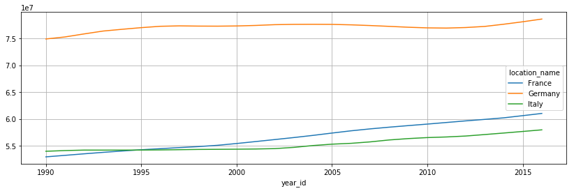
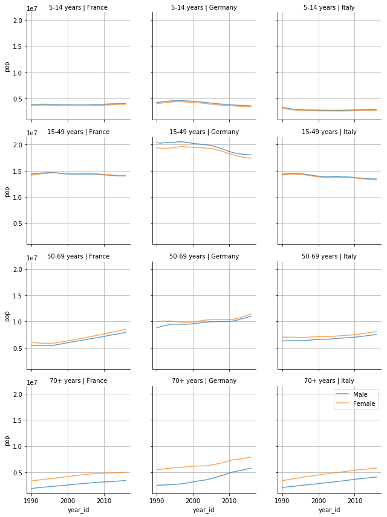

2. Processing of tabular data¶
Import Statements
In [1]:
% matplotlib inline
import pandas as pd
import matplotlib.pyplot as plt
2.1. Read the data¶
Read .csv file
In [2]:
pop = pd.read_csv("../data/IHME_GBD_2016_POPULATION_ESTIMATES_1990_2016_Y2017M09D14.csv")
In [3]:
pop
Out[3]:
| location_id | location_name | sex_id | sex_name | age_group_id | age_group_name | year_id | pop | |
|---|---|---|---|---|---|---|---|---|
| 0 | 1 | Global | 1 | Male | 1 | Under 5 | 1990 | 3.073378e+08 |
| 1 | 1 | Global | 2 | Female | 1 | Under 5 | 1990 | 2.911299e+08 |
| 2 | 1 | Global | 3 | Both | 1 | Under 5 | 1990 | 5.984677e+08 |
| 3 | 1 | Global | 1 | Male | 1 | Under 5 | 1991 | 3.089656e+08 |
| 4 | 1 | Global | 2 | Female | 1 | Under 5 | 1991 | 2.921822e+08 |
| 5 | 1 | Global | 3 | Both | 1 | Under 5 | 1991 | 6.011477e+08 |
| 6 | 1 | Global | 1 | Male | 1 | Under 5 | 1992 | 3.096011e+08 |
| 7 | 1 | Global | 2 | Female | 1 | Under 5 | 1992 | 2.923199e+08 |
| 8 | 1 | Global | 3 | Both | 1 | Under 5 | 1992 | 6.019210e+08 |
| 9 | 1 | Global | 1 | Male | 1 | Under 5 | 1993 | 3.094043e+08 |
| 10 | 1 | Global | 2 | Female | 1 | Under 5 | 1993 | 2.916887e+08 |
| 11 | 1 | Global | 3 | Both | 1 | Under 5 | 1993 | 6.010930e+08 |
| 12 | 1 | Global | 1 | Male | 1 | Under 5 | 1994 | 3.086484e+08 |
| 13 | 1 | Global | 2 | Female | 1 | Under 5 | 1994 | 2.905336e+08 |
| 14 | 1 | Global | 3 | Both | 1 | Under 5 | 1994 | 5.991819e+08 |
| 15 | 1 | Global | 1 | Male | 1 | Under 5 | 1995 | 3.075657e+08 |
| 16 | 1 | Global | 2 | Female | 1 | Under 5 | 1995 | 2.891986e+08 |
| 17 | 1 | Global | 3 | Both | 1 | Under 5 | 1995 | 5.967643e+08 |
| 18 | 1 | Global | 1 | Male | 1 | Under 5 | 1996 | 3.065156e+08 |
| 19 | 1 | Global | 2 | Female | 1 | Under 5 | 1996 | 2.880295e+08 |
| 20 | 1 | Global | 3 | Both | 1 | Under 5 | 1996 | 5.945451e+08 |
| 21 | 1 | Global | 1 | Male | 1 | Under 5 | 1997 | 3.057610e+08 |
| 22 | 1 | Global | 2 | Female | 1 | Under 5 | 1997 | 2.871451e+08 |
| 23 | 1 | Global | 3 | Both | 1 | Under 5 | 1997 | 5.929061e+08 |
| 24 | 1 | Global | 1 | Male | 1 | Under 5 | 1998 | 3.052792e+08 |
| 25 | 1 | Global | 2 | Female | 1 | Under 5 | 1998 | 2.865252e+08 |
| 26 | 1 | Global | 3 | Both | 1 | Under 5 | 1998 | 5.918044e+08 |
| 27 | 1 | Global | 1 | Male | 1 | Under 5 | 1999 | 3.050629e+08 |
| 28 | 1 | Global | 2 | Female | 1 | Under 5 | 1999 | 2.861586e+08 |
| 29 | 1 | Global | 3 | Both | 1 | Under 5 | 1999 | 5.912215e+08 |
| ... | ... | ... | ... | ... | ... | ... | ... | ... |
| 603906 | 44639 | Middle SDI | 1 | Male | 235 | 95 plus | 2007 | 1.079713e+05 |
| 603907 | 44639 | Middle SDI | 2 | Female | 235 | 95 plus | 2007 | 2.470795e+05 |
| 603908 | 44639 | Middle SDI | 3 | Both | 235 | 95 plus | 2007 | 3.550508e+05 |
| 603909 | 44639 | Middle SDI | 1 | Male | 235 | 95 plus | 2008 | 1.158280e+05 |
| 603910 | 44639 | Middle SDI | 2 | Female | 235 | 95 plus | 2008 | 2.643836e+05 |
| 603911 | 44639 | Middle SDI | 3 | Both | 235 | 95 plus | 2008 | 3.802115e+05 |
| 603912 | 44639 | Middle SDI | 1 | Male | 235 | 95 plus | 2009 | 1.238045e+05 |
| 603913 | 44639 | Middle SDI | 2 | Female | 235 | 95 plus | 2009 | 2.820579e+05 |
| 603914 | 44639 | Middle SDI | 3 | Both | 235 | 95 plus | 2009 | 4.058625e+05 |
| 603915 | 44639 | Middle SDI | 1 | Male | 235 | 95 plus | 2010 | 1.317829e+05 |
| 603916 | 44639 | Middle SDI | 2 | Female | 235 | 95 plus | 2010 | 3.002316e+05 |
| 603917 | 44639 | Middle SDI | 3 | Both | 235 | 95 plus | 2010 | 4.320145e+05 |
| 603918 | 44639 | Middle SDI | 1 | Male | 235 | 95 plus | 2011 | 1.393521e+05 |
| 603919 | 44639 | Middle SDI | 2 | Female | 235 | 95 plus | 2011 | 3.193522e+05 |
| 603920 | 44639 | Middle SDI | 3 | Both | 235 | 95 plus | 2011 | 4.587043e+05 |
| 603921 | 44639 | Middle SDI | 1 | Male | 235 | 95 plus | 2012 | 1.465375e+05 |
| 603922 | 44639 | Middle SDI | 2 | Female | 235 | 95 plus | 2012 | 3.389070e+05 |
| 603923 | 44639 | Middle SDI | 3 | Both | 235 | 95 plus | 2012 | 4.854444e+05 |
| 603924 | 44639 | Middle SDI | 1 | Male | 235 | 95 plus | 2013 | 1.522679e+05 |
| 603925 | 44639 | Middle SDI | 2 | Female | 235 | 95 plus | 2013 | 3.577482e+05 |
| 603926 | 44639 | Middle SDI | 3 | Both | 235 | 95 plus | 2013 | 5.100161e+05 |
| 603927 | 44639 | Middle SDI | 1 | Male | 235 | 95 plus | 2014 | 1.576811e+05 |
| 603928 | 44639 | Middle SDI | 2 | Female | 235 | 95 plus | 2014 | 3.768860e+05 |
| 603929 | 44639 | Middle SDI | 3 | Both | 235 | 95 plus | 2014 | 5.345671e+05 |
| 603930 | 44639 | Middle SDI | 1 | Male | 235 | 95 plus | 2015 | 1.640926e+05 |
| 603931 | 44639 | Middle SDI | 2 | Female | 235 | 95 plus | 2015 | 3.984956e+05 |
| 603932 | 44639 | Middle SDI | 3 | Both | 235 | 95 plus | 2015 | 5.625882e+05 |
| 603933 | 44639 | Middle SDI | 1 | Male | 235 | 95 plus | 2016 | 1.766505e+05 |
| 603934 | 44639 | Middle SDI | 2 | Female | 235 | 95 plus | 2016 | 4.302028e+05 |
| 603935 | 44639 | Middle SDI | 3 | Both | 235 | 95 plus | 2016 | 6.068534e+05 |
603936 rows × 8 columns
2.2. Inspect the data¶
Columns
In [4]:
pop.columns
Out[4]:
Index(['location_id', 'location_name', 'sex_id', 'sex_name', 'age_group_id',
'age_group_name', 'year_id', 'pop'],
dtype='object')
2.3. Exploratory Data Analysis¶
In [5]:
pop.location_name.nunique()
Out[5]:
231
In [6]:
pop.location_name.sample(10)
Out[6]:
351788 North Africa and Middle East
456458 Ethiopia
252414 High-income North America
30795 Maldives
87678 Kazakhstan
7237 East Asia
113954 Croatia
171398 Singapore
13647 Taiwan
309660 Ecuador
Name: location_name, dtype: object
In [7]:
pop.sex_name.unique()
Out[7]:
array(['Male', 'Female', 'Both'], dtype=object)
In [8]:
pop.age_group_name.unique()
Out[8]:
array(['Under 5', 'Early Neonatal', 'Late Neonatal', 'Post Neonatal',
'1 to 4', '5 to 9', '10 to 14', '15 to 19', '20 to 24', '25 to 29',
'30 to 34', '35 to 39', '40 to 44', '45 to 49', '50 to 54',
'55 to 59', '60 to 64', '65 to 69', '70 to 74', '75 to 79',
'All Ages', '5-14 years', '15-49 years', '50-69 years',
'70+ years', '<1 year', '80 to 84', '85 to 89', '90 to 94',
'<20 years', '10-24 years', '95 plus'], dtype=object)
2.4. Analyzing a subset of the dataset¶
Subsetting
In [9]:
ages = ['5-14 years', '15-49 years', '50-69 years','70+ years']
location = ["Germany", "France", "Italy"]
sex = ['Male', 'Female']
cond = (
pop.age_group_name.isin(ages) &
pop.location_name.isin(location) &
pop.sex_name.isin(sex)
)
In [10]:
pop_subset = pop.loc[cond,:]
print(pop_subset.shape)
pop_subset.sample(5)
(648, 8)
Out[10]:
| location_id | location_name | sex_id | sex_name | age_group_id | age_group_name | year_id | pop | |
|---|---|---|---|---|---|---|---|---|
| 204159 | 81 | Germany | 1 | Male | 26 | 70+ years | 2003 | 3499564.87 |
| 201460 | 80 | France | 2 | Female | 25 | 50-69 years | 1994 | 5854150.03 |
| 203886 | 81 | Germany | 1 | Male | 23 | 5-14 years | 1993 | 4515768.79 |
| 204177 | 81 | Germany | 1 | Male | 26 | 70+ years | 2009 | 4616448.31 |
| 201484 | 80 | France | 2 | Female | 25 | 50-69 years | 2002 | 6570676.64 |
2.4.1. Split-Apply-Combine¶
|image0| Image source: Jake VanderPlas 2016, Data Science Handbook
In [11]:
gb = pop_subset.groupby(["year_id", "location_name"])["pop"].sum()
gb
Out[11]:
year_id location_name
1990 France 52924678.45
Germany 74905392.07
Italy 53965720.67
1991 France 53204997.81
Germany 75282202.61
Italy 54096588.22
1992 France 53491245.78
Germany 75846260.69
Italy 54185851.15
1993 France 53764681.77
Germany 76382332.04
Italy 54181997.23
1994 France 54014103.00
Germany 76711513.38
Italy 54185577.66
1995 France 54244201.26
Germany 77017974.10
Italy 54196349.68
1996 France 54453151.38
Germany 77271569.64
Italy 54215293.54
1997 France 54652082.22
Germany 77347967.36
Italy 54261314.98
1998 France 54837898.37
Germany 77306087.32
Italy 54309603.01
1999 France 55080702.99
Germany 77293813.76
Italy 54329309.93
...
2007 France 58140459.87
Germany 77410998.63
Italy 55715794.01
2008 France 58458362.46
Germany 77257023.21
Italy 56075640.98
2009 France 58750572.26
Germany 77093829.71
Italy 56330724.78
2010 France 59034248.17
Germany 76974942.55
Italy 56517916.98
2011 France 59333389.35
Germany 76936624.35
Italy 56633630.78
2012 France 59628203.78
Germany 77038235.71
Italy 56805924.59
2013 France 59907632.52
Germany 77242754.95
Italy 57081736.70
2014 France 60200287.87
Germany 77653446.03
Italy 57366276.76
2015 France 60607027.88
Germany 78112961.81
Italy 57659331.41
2016 France 61020069.08
Germany 78619000.77
Italy 57960714.36
Name: pop, Length: 81, dtype: float64
2.4.2. Plotting¶
In [12]:
gb.unstack().plot(figsize=(14,4))
plt.grid()

In [13]:
import seaborn as sns
In [14]:
sns.set_style({"axes.grid": True})
g = sns.FacetGrid(data=pop_subset, row='age_group_name',
col='location_name', hue="sex_name")
g.map(plt.plot, "year_id", "pop", alpha=.7)
[plt.setp(ax.texts, text="") for ax in g.axes.flat]
g.set_titles(row_template = '{row_name}', col_template = '{col_name}')
plt.legend()
plt.tight_layout();
